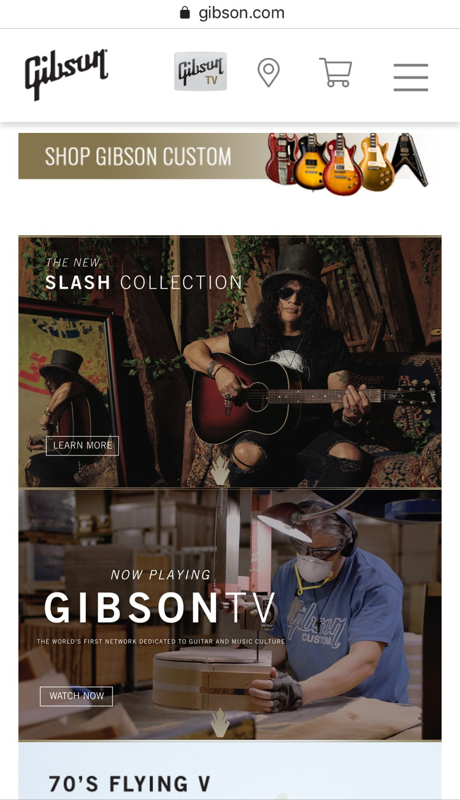
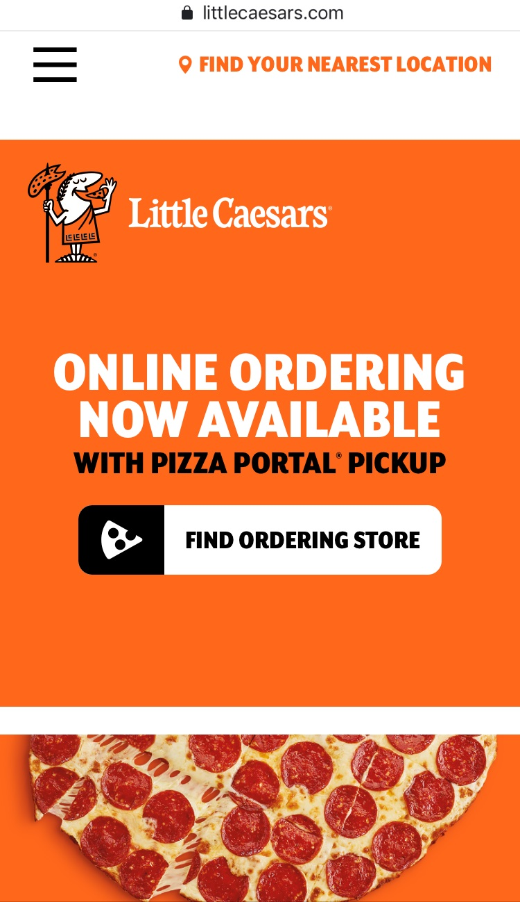

Rule of Third
Gibson
gibson.com
Looking at the picture of Guns and Roses Guitarrist, Slash, sitting on the right side, holding a guitar, we can see that Rule of Third is applied to this picture. If we trace the crossed lines over the picture, we can observe how a big section of Slash picture is right on the two, third, fifth and six quadrant and just over the cross, pointing the attention on that crossing point.
Contrast
Wendys
littlecaesars.com
The orange color in contrast with black and white letters is one of the remarkable use of the Contrast principle in this picture. Most of the picture is in orange color, the color of Little Caesars, highlighting it and make the contrast more evident. In a less level, the pizza picture is contrasting with the orange background.
Proximity
Nike
nike.comWhite-letter are all closed to the woman foot, but also they are placed just on the right of the sneakers. And the sneakers bigger than the rest. This is not a mistake, It's the application of the principle of Proximity. Using this technique, Nike want to let the customer know the New HIIT-Ready Model , highlighting the beauty and perfection of it and also highlighting its fuctions and atributes.